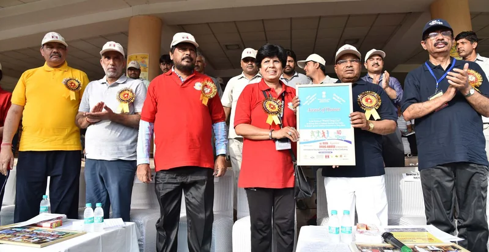

India · who built this
The campaign behind it.
None of what is on the other pages appeared on its own. There is a named government programme behind it, with a start date and a figure you can look up. That is the point of printing it here: so you can check that this site is not making it up.
The programme
Nasha Mukt Bharat Abhiyaan
Search for“Nasha Mukt Bharat Abhiyaan”
The nationwide campaign. It began in 272 districts picked as the most affected, and it now runs in every district in the country. It is the part of the government effort that is about reaching people rather than about policing them.
In the public record
In the public record

Real photographThe Ministry of Social Justice and Empowerment’s 16th Run against Drug Abuse, New Delhi, 26 June 2018. The same ministry runs the campaign on this page, two years before it began.
Ministry of Social Justice and Empowerment · GODL-India · original

India Gate, 26 June 2011. Whatever else is true about the programmes on this page, they are not a rumour: they have dates, budgets and photographs in the public record.
Press Information Bureau, Government of India · GODL-India · original

Who it has actually reached
Nearly four in every ten people this campaign has reached were young.
11.43 crore of 29.68 crore — 38 in every 100
Government of India figures, given to Parliament on 23 July 2026. If you feel like the only one, the numbers disagree.
What is not published
What is not published
No government page publishes how many people finish treatment or stay stopped. So this site does not print a number for it either.